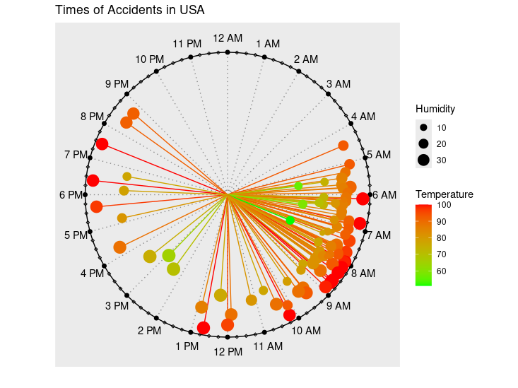
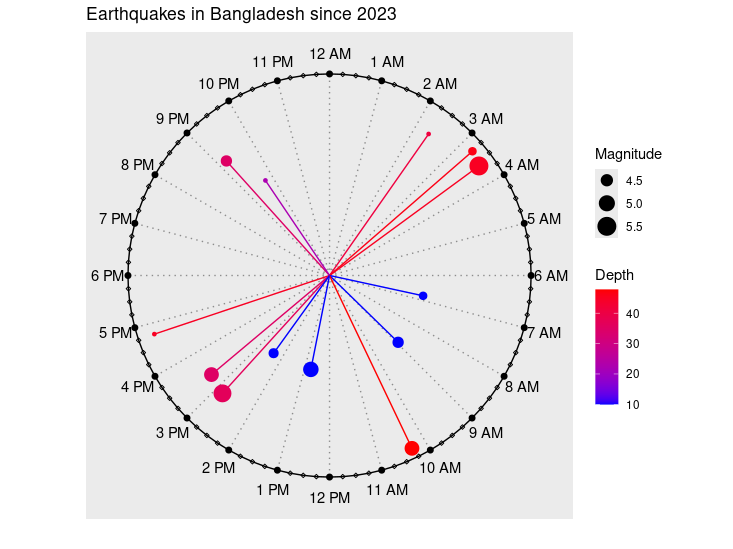

title: ‘clockplot: An R package to Plot Event Times on a 24-Hour Clock’ tags: - R - visualization - timestamp authors: - name: Abdullah Al Mahmud orcid: 0000-0003-2814-8798 affiliation: 1 affiliations: - name: Bangladesh Cadet College index: 1 date: 05 December 2025 bibliography: paper.bib nocite: “@*”
Visualization is a fundamental component of statistical analysis and prediction, enabling clear data description and informed model selection. While various methods exist for visualizing event data, there is a notable gap in representing events on a clock face. In this paper, we introduce clockplot, an R package for plotting timestamped events on a 24-hour circular clock face. This approach offers a powerful way to perceive the precise timing of events and facilitates intuitive comparisons with other events. The clockplot is particularly useful for analyzing daily patterns, event clustering, and temporal gaps. For event times, it is significantly more revealing than conventional visualizations like bar or pie charts. This package also generalizes the clockplot approach to create cyclic charts for other time frames, including weekly and monthly cycles. This functionality enables effective event planning and pattern analysis across multiple periods, providing a new and insightful tool for temporal data analysis.
Statement of Need
Visualizing temporal patterns in timestamped event data presents unique challenges, particularly when events exhibit cyclical behavior over 24-hour periods. Traditional linear timelines (e.g., using ggplot2::geom_point() with time on the x-axis) have several limitations for this type of analysis:
- Circular continuity is broken: The natural continuity between 23:59 and 00:00 is not preserved, making it difficult to see patterns that span midnight.
- Density patterns are hard to discern: Clustering of events around specific times of day is less visually apparent on linear axes.
- Multiple days of data become cluttered: Plotting several days of data on a linear timeline creates overlapping points that obscure daily patterns.
Available Software
While several R and Python packages offer circular or radial visualization capabilities, they are either too general-purpose or not specifically designed for timestamp data:
-
General circular plotting: Packages like
circularandplotrixprovide basic circular plotting [@R-plotrix; @R-circular] but require extensive data transformation for timestamp visualization. -
Polar coordinates:
ggplot2withcoord_polar()can create circular plots, but requires manual conversion of timestamps to radians and lacks specialized aesthetics for event data [@ggplot2]. -
Specialized but limited: Packages like
chronandlubridatehandle time data but don’t provide circular visualization methods [@lubridate]. - CircadiPy: deals with rhythmic data, but does not create circular visualizations [@carvalho2024circadipy].
The package provides specialized visualization methods for multivariate data including colored point aesthetics (mapping variables to hue/size/shape) and modifiable clock hand lengths (representing magnitude or intensity at each timestamp). These features enable clear differentiation of multiple variables on the same 24-hour clock face while maintaining intuitive interpretation of temporal patterns.
Acceptable Data Type
clockplot handles two primary data types:
Features
The following code creates a circular visualization of USA accidents:
library(tidyverse)
library(clockplot)
acdt <- read.csv("https://raw.githubusercontent.com/mahmudstat/open-analysis/main/data/usacc.csv")
acdt %>% ggplot(aes(Time, Humidity...))+
geom_bar(stat = "identity")+
labs(x = "Time",
y = "Humidity",
title = "USA Accidents Time and Corresponding Humidity")
Figure 1 reveals several important patterns:
- Clear temporal clustering: Accidents peak during evening rush hours (5-7 PM) and show a secondary morning peak (8-9 AM)
- Critical gaps: Noticeably fewer accidents occur between 2-5 AM
-
Multivariate encoding: Each point encodes two additional variables:
- Point size represents humidity levels
- Point color represents temperature (red = warmer, blue = cooler)
- Cross-midnight continuity: The natural connection between late-night (11 PM) and early-morning (1-2 AM) accidents is preserved
The plot enables immediate identification of high-risk periods while simultaneously showing how environmental factors correlate with accident frequency—a multidimensional insight difficult to achieve with traditional linear timelines.
Similar conclusions can be drawn from Figure 2.

Figure 3 plots qualitative data, showing not only when SMS messages were received but also who sent them.

Usage
Complete documentation with all parameters and examples is available at mahmudstat.github.io/clockplot.
Acknowledgments
The example analyses use data from public repositories including the US Accidents Dataset and earthquake data from the United States Geological Survey (USGS).
We are grateful to the Comprehensive R Archive Network (CRAN) [@R-base] team for maintaining the infrastructure that supports open source software distribution and reproducibility in R. We also acknowledge GitHub for providing the collaborative platform used to develop, maintain, and share the source code for this package.